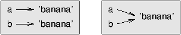

8.1 A list is a sequence
Like a string, a list is a sequence of values. In a string, the
values are characters; in a list, they can be any type. The values in
list are called elements or sometimes items.
There are several ways to create a new list; the simplest is to
enclose the elements in square brackets ([ and ]):
[10, 20, 30, 40]
['crunchy frog', 'ram bladder', 'lark vomit']
The first example is a list of four integers. The second is a list of
three strings. The elements of a list don't have to be the same type.
The following list contains a string, a float, an integer, and
(lo!) another list:
['spam', 2.0, 5, [10, 20]]
A list within another list is nested.
A list that contains no elements is
called an empty list; you can create one with empty
brackets, [].
As you might expect, you can assign list values to variables:
>>> cheeses = ['Cheddar', 'Edam', 'Gouda']
>>> numbers = [17, 123]
>>> empty = []
>>> print cheeses, numbers, empty
['Cheddar', 'Edam', 'Gouda'] [17, 123] []
8.2 Lists are mutable
The syntax for accessing the elements of a list is the same as for
accessing the characters of a string---the bracket operator. The
expression inside the brackets specifies the index. Remember that the
indices start at 0:
>>> print cheeses[0]
Cheddar
Unlike strings, lists are mutable because you can change the order
of items in a list or reassign an item in a list.
When the bracket operator appears on the left side of an assignment,
it identifies the element of the list that will be assigned.
>>> numbers = [17, 123]
>>> numbers[1] = 5
>>> print numbers
[17, 5]
The one-eth element of numbers, which
used to be 123, is now 5.
You can think of a list as a relationship between indices and
elements. This relationship is called a mapping; each index
``maps to'' one of the elements.
List indices work the same way as string indices:
- Any integer expression can be used as an index.
- If you try to read or write an element that does not exist, you
get an IndexError.
- If an index has a negative value, it counts backward from the
end of the list.
The in operator also works on lists.
>>> cheeses = ['Cheddar', 'Edam', 'Gouda']
>>> 'Edam' in cheeses
True
>>> 'Brie' in cheeses
False
8.3 Traversing a list
The most common way to traverse the elements of a list is
with a for loop. The syntax is the same as for strings:
for cheese in cheeses:
print cheese
This works well if you only need to read the elements of the
list. But if you want to write or update the elements, you
need the indices. A common way to do that is to combine
the functions range and len:
for i in range(len(numbers)):
numbers[i] = numbers[i] * 2
This loop traverses the list and updates each element. len
returns the number of elements in the list. range returns
a list of indices from 0 to n-1, where n is the length of
the list. Each time through the loop i gets the index
of the next element. The assignment statement in the body uses
i to read the old value of the element and to assign the
new value.
A for loop over an empty list never executes the body:
for x in empty:
print 'This never happens.'
Although a list can contain another list, the nested
list still counts as a single element. The length of this list is
four:
['spam', 1, ['Brie', 'Roquefort', 'Pol le Veq'], [1, 2, 3]]
8.4 List operations
The + operator concatenates lists:
>>> a = [1, 2, 3]
>>> b = [4, 5, 6]
>>> c = a + b
>>> print c
[1, 2, 3, 4, 5, 6]
Similarly, the * operator repeats a list a given number of times:
>>> [0] * 4
[0, 0, 0, 0]
>>> [1, 2, 3] * 3
[1, 2, 3, 1, 2, 3, 1, 2, 3]
The first example repeats [0] four times. The second example
repeats the list [1, 2, 3] three times.
8.5 List slices
The slice operator also works on lists:
>>> t = ['a', 'b', 'c', 'd', 'e', 'f']
>>> t[1:3]
['b', 'c']
>>> t[:4]
['a', 'b', 'c', 'd']
>>> t[3:]
['d', 'e', 'f']
If you omit the first index, the slice starts at the beginning.
If you omit the second, the slice goes to the end. So if you
omit both, the slice is a copy of the whole list.
>>> t[:]
['a', 'b', 'c', 'd', 'e', 'f']
Since lists are mutable, it is often useful to make a copy
before performing operations that fold, spindle or mutilate
lists.
A slice operator on the left side of an assignment
can update multiple elements:
>>> t = ['a', 'b', 'c', 'd', 'e', 'f']
>>> t[1:3] = ['x', 'y']
>>> print t
['a', 'x', 'y', 'd', 'e', 'f']
8.6 List methods
Python provides methods that operate on lists. For example,
append adds a new element to the end of a list:
>>> t = ['a', 'b', 'c']
>>> t.append('d')
>>> print t
['a', 'b', 'c', 'd']
extend takes a list as an argument and appends all of
the elements:
>>> t1 = ['a', 'b', 'c']
>>> t2 = ['d', 'e']
>>> t1.extend(t2)
>>> print t1
['a', 'b', 'c', 'd', 'e']
This example leaves t2 unmodified.
sort arranges the elements of the list from low to high:
>>> t = ['d', 'c', 'e', 'b', 'a']
>>> t.sort()
>>> print t
['a', 'b', 'c', 'd', 'e']
Most list methods are void; they modify the list and return None.
If you accidentally write t = t.sort(), you will be disappointed
with the result.
8.7 Deleting elements
There are several ways to delete elements from a list. If you
know the index of the element you want, you can use
pop:
>>> t = ['a', 'b', 'c']
>>> x = t.pop(1)
>>> print t
['a', 'c']
>>> print x
b
pop modifies the list and returns the element that was removed.
If you don't provide an index, it deletes and returns the
last element.
If you don't need the removed value, you can use the del
operator:
>>> t = ['a', 'b', 'c']
>>> del t[1]
>>> print t
['a', 'c']
If you know the element you want to remove (but not the index), you
can use remove:
>>> t = ['a', 'b', 'c']
>>> t.remove('b')
>>> print t
['a', 'c']
The return value from remove is None.
To remove more than one element, you can use del with
a slice index:
>>> t = ['a', 'b', 'c', 'd', 'e', 'f']
>>> del t[1:5]
>>> print t
['a', 'f']
As usual, the slice selects all the elements up to, but not
including, the second index.
8.8 Lists and functions
There are a number of built-in functions that can be used on lists
that allow you to quickly look through a list without
writing your own loops:
>>> nums = [3, 41, 12, 9, 74, 15]
>>> print len(nums)
6
>>> print max(nums)
74
>>> print min(nums)
3
>>> print sum(nums)
154
>>> print sum(nums)/len(nums)
25
The sum() function only works when the list elements are numbers.
The other functions (max(), len(), etc.) work with lists of
strings and other types that can be comparable.
We could rewrite an earlier program that computed the average of
a list of numbers entered by the user using a list.
First, the program to compute an average without a list:
total = 0
count = 0
while ( True ) :
inp = raw_input('Enter a number: ')
if inp == 'done' : break
value = float(inp)
total = total + value
count = count + 1
average = total / count
print 'Average:', average
In this program, we have count and sum variables to
keep the number and running total of the user's numbers as
we repeatedly prompt the user for a number.
We could simply remember each number as the user entered it
and use built-in functions to compute the sum and count at
the end.
numlist = list()
while ( True ) :
inp = raw_input('Enter a number: ')
if inp == 'done' : break
value = float(inp)
numlist.append(value)
average = sum(numlist) / len(numlist)
print 'Average:', average
We make an empty list before the loop starts, and then each time we have
a number, we append it to the list. At the end of
the program, we simply compute the sum of the numbers in the
list and divide it by the count of the numbers in the
list to come up with the average.
8.9 Lists and strings
A string is a sequence of characters and a list is a sequence
of values, but a list of characters is not the same as a
string. To convert from a string to a list of characters,
you can use list:
>>> s = 'spam'
>>> t = list(s)
>>> print t
['s', 'p', 'a', 'm']
Because list is the name of a built-in function, you should
avoid using it as a variable name. I also avoid l because
it looks too much like 1. So that's why I use t.
The list function breaks a string into individual letters. If
you want to break a string into words, you can use the split
method:
>>> s = 'pining for the fjords'
>>> t = s.split()
>>> print t
['pining', 'for', 'the', 'fjords']
>>> print t[2]
the
Once you have used split to break the string into
a list of tokens, you can use the index operator (square
bracket) to look at a particular word in the list.
You can call split with
an optional argument called a delimiter specifies which
characters to use as word boundaries.
The following example
uses a hyphen as a delimiter:
>>> s = 'spam-spam-spam'
>>> delimiter = '-'
>>> s.split(delimiter)
['spam', 'spam', 'spam']
join is the inverse of split. It
takes a list of strings and
concatenates the elements. join is a string method,
so you have to invoke it on the delimiter and pass the
list as a parameter:
>>> t = ['pining', 'for', 'the', 'fjords']
>>> delimiter = ' '
>>> delimiter.join(t)
'pining for the fjords'
In this case the delimiter is a space character, so
join puts a space between words. To concatenate
strings without spaces, you can use the empty string,
'', as a delimiter.
8.10 Parsing lines
Usually when we are reading a file
we want to do something to the lines other than just
printing the whole line. Often we want to find the ``interesting
lines'' and then parse the line to find some interesting
part of the line. What if we wanted to print out the day of the
week from those lines that start with ``From ''.
From stephen.marquard@uct.ac.za Sat Jan 5 09:14:16 2008
The split method is very effective when faced with this
kind of problem.
We can write a small program that looks for lines where the
line starts with ``From '' and then split those lines
and then print out the third word in the line:
fhand = open('mbox-short.txt')
for line in fhand:
line = line.rstrip()
if not line.startswith('From ') : continue
words = line.split()
print words[2]
We also use the contracted form of the if
statement where we put the continue on the
same line as the if. This contracted form
of the if functions the same as if the
continue were on the next line and indented.
The program produces the following output:
Sat
Fri
Fri
Fri
...
Later, we will learn increasingly sophisticated techniques for
picking the lines to work on and how we pull those lines apart
to find the exact bit of information we are looking for.
8.11 Objects and values
If we execute these assignment statements:
a = 'banana'
b = 'banana'
We know that a and b both refer to a
string, but we don't
know whether they refer to the same string.
There are two possible states:

In one case, a and b refer to two different objects that
have the same value. In the second case, they refer to the same
object.
To check whether two variables refer to the same object, you can
use the is operator.
>>> a = 'banana'
>>> b = 'banana'
>>> a is b
True
In this example, Python only created one string object,
and both a and b refer to it.
But when you create two lists, you get two objects:
>>> a = [1, 2, 3]
>>> b = [1, 2, 3]
>>> a is b
False
In this case we would say that the two lists are equivalent,
because they have the same elements, but not identical, because
they are not the same object. If two objects are identical, they are
also equivalent, but if they are equivalent, they are not necessarily
identical.
Until now, we have been using ``object'' and ``value''
interchangeably, but it is more precise to say that an object has a
value. If you execute a = [1,2,3], a refers to a list
object whose value is a particular sequence of elements. If another
list has the same elements, we would say it has the same value.
8.12 Aliasing
If a refers to an object and you assign b = a,
then both variables refer to the same object:
>>> a = [1, 2, 3]
>>> b = a
>>> b is a
True
The association of a variable with an object is called a reference. In this example, there are two references to the same
object.
An object with more than one reference has more
than one name, so we say that the object is aliased.
If the aliased object is mutable,
changes made with one alias affect
the other:
>>> b[0] = 17
>>> print a
[17, 2, 3]
Although this behavior can be useful, it is error-prone. In general,
it is safer to avoid aliasing when you are working with mutable
objects.
For immutable objects like strings, aliasing is not as much of a
problem. In this example:
a = 'banana'
b = 'banana'
It almost never makes a difference whether a and b refer
to the same string or not.
8.13 List arguments
When you pass a list to a function, the function gets a reference
to the list.
If the function modifies a list parameter, the caller sees the change.
For example, delete_head removes the first element from a list:
def delete_head(t):
del t[0]
Here's how it is used:
>>> letters = ['a', 'b', 'c']
>>> delete_head(letters)
>>> print letters
['b', 'c']
The parameter t and the variable letters are
aliases for the same object.
It is important to distinguish between operations that
modify lists and operations that create new lists. For
example, the append method modifies a list, but the
+ operator creates a new list:
>>> t1 = [1, 2]
>>> t2 = t1.append(3)
>>> print t1
[1, 2, 3]
>>> print t2
None
>>> t3 = t1 + [3]
>>> print t3
[1, 2, 3]
>>> t2 is t3
False
This difference is important when you write functions that
are supposed to modify lists. For example, this function
does not delete the head of a list:
def bad_delete_head(t):
t = t[1:] # WRONG!
The slice operator creates a new list and the assignment
makes t refer to it, but none of that has any effect
on the list that was passed as an argument.
An alternative is to write a function that creates and
returns a new list. For
example, tail returns all but the first
element of a list:
def tail(t):
return t[1:]
This function leaves the original list unmodified.
Here's how it is used:
>>> letters = ['a', 'b', 'c']
>>> rest = tail(letters)
>>> print rest
['b', 'c']
Exercise 1
Write a function called chop that takes a list and modifies
it, removing the first and last elements, and returns None.
Then write a function called middle that takes a list and
returns a new list that contains all but the first and last
elements.
8.14 Debugging
Careless use of lists (and other mutable objects)
can lead to long hours of debugging. Here are some common
pitfalls and ways to avoid them:
- Don't forget that most list methods modify the argument and
return None. This is the opposite of the string methods,
which return a new string and leave the original alone.
If you are used to writing string code like this:
word = word.strip()
It is tempting to write list code like this:
t = t.sort() # WRONG!
Because sort returns None, the
next operation you perform with t is likely to fail.
Before using list methods and operators, you should read the
documentation carefully and then test them in interactive mode. The
methods and operators that lists share with other sequences (like
strings) are documented at
docs.python.org/lib/typesseq.html. The
methods and operators that only apply to mutable sequences
are documented at docs.python.org/lib/typesseq-mutable.html.
- Pick an idiom and stick with it.
Part of the problem with lists is that there are too many
ways to do things. For example, to remove an element from
a list, you can use pop, remove, del,
or even a slice assignment.
To add an element, you can use the append method or
the + operator. But don't forget that these are right:
t.append(x)
t = t + [x]
And these are wrong:
t.append([x]) # WRONG!
t = t.append(x) # WRONG!
t + [x] # WRONG!
t = t + x # WRONG!
Try out each of these examples in interactive mode to make sure
you understand what they do. Notice that only the last
one causes a runtime error; the other three are legal, but they
do the wrong thing.
- Make copies to avoid aliasing.
If you want to use a method like sort that modifies
the argument, but you need to keep the original list as
well, you can make a copy.
orig = t[:]
t.sort()
In this example you could also use the built-in function sorted,
which returns a new, sorted list and leaves the original alone.
But in that case you should avoid using sorted as a variable
name!
- Lists, split, and files
When we read and parse files, there are many opportunities
to encounter input that can crash our program so it is a good
idea to revisit the guardian pattern when it comes
writing programs that read through a file
and look for a ``needle in the haystack''.
Let's revisit our program that is looking for the day of the
week on the from lines of our file:
From stephen.marquard@uct.ac.za Sat Jan 5 09:14:16 2008
Since we are breaking this line into words, we could dispense
with the use of startswith and simply look at the
first word of the line to determine if we are interested
in the line at all. We can use continue to skip lines
that don't have ``From'' as the first word as follows:
fhand = open('mbox-short.txt')
for line in fhand:
words = line.split()
if words[0] != 'From' : continue
print words[2]
This looks much simpler and we don't even need to do the
rstrip to remove the newline at the end of the file.
But is it better?
python search8.py
Sat
Traceback (most recent call last):
File "search8.py", line 5, in <module>
if words[0] != 'From' : continue
IndexError: list index out of range
It kind of works and we see the day from the first line
(Sat) but then the program fails with a traceback error.
What went wrong? What messed-up data caused our elegant,
clever and very Pythonic program to fail?
You could stare at it for a long time and puzzle through
it or ask someone for help, but the quicker and smarter
approach is to add a print statement. The best place
to add the print statement is right before the line where
the program failed and print out the data that seems to be causing
the failure.
Now this approach may generate a lot of lines of output but at
least you will immediately have some clue as to the
problem at hand. So we add a print of the variable
words right before line five. We even
add a prefix ``Debug:'' to the line so we can keep
our regular output separate from our debug output.
for line in fhand:
words = line.split()
print 'Debug:', words
if words[0] != 'From' : continue
print words[2]
When we run the program, a lot of output scrolls off the screen
but at the end, we see our debug output and the traceback so
we know what happened just before the traceback.
Debug: ['X-DSPAM-Confidence:', '0.8475']
Debug: ['X-DSPAM-Probability:', '0.0000']
Debug: []
Traceback (most recent call last):
File "search9.py", line 6, in <module>
if words[0] != 'From' : continue
IndexError: list index out of range
Each debug line is printing the list of words which we get
when we split the line into words. When the program fails
the list of words is empty []. If we open the file in a text editor
and look at the file, at that point it looks as follows:
X-DSPAM-Result: Innocent
X-DSPAM-Processed: Sat Jan 5 09:14:16 2008
X-DSPAM-Confidence: 0.8475
X-DSPAM-Probability: 0.0000
Details: http://source.sakaiproject.org/viewsvn/?view=rev&rev=39772
The error occurs when our program encounters a blank line! Of course there
are ``zero words'' on a blank line. Why didn't we think of that
when we were writing the code. When the code looks for the first
word (word[0]) to check to see if it matches ``From'',
we get an ``index out of range'' error.
This of course is the perfect place to add some guardian code
to avoid checking the first word if the first word is not there.
There are many ways to protect this code, we will choose to
check the number of words we have before we look at the first word:
fhand = open('mbox-short.txt')
count = 0
for line in fhand:
words = line.split()
# print 'Debug:', words
if len(words) == 0 : continue
if words[0] != 'From' : continue
print words[2]
First we commented out the debug print statement instead of removing it
in case our modification fails and we need to debug again. Then we added
a guardian statement that checks to see if we have zero words, and if so,
we use continue to skip to the next line in the file.
We can think of the two continue statements as helping us refine
the set of lines which are ``interesting'' to us and which we want
to process some more. A line which has no words is ``uninteresting'' to
us so we skip to the next line. A line which does not have ``From''
as its first word is uninteresting to us so we skip it.
The program as modified runs successfully so perhaps it is correct. Our
guardian statement does make sure that the words[0] will never fail,
but perhaps it is not enough. When we are programming, we must always be
thinking, ``What might go wrong?''.
Exercise 2
Figure out which line of the above program is still not properly guarded.
See if you can construct a text file which causes the program to fail
and then modify the program so that the line is properly guarded and
test it to make sure it handles your new text file.
Exercise 3
Rewrite the guardian code in the above example without two
if statements. Instead use a compound logical expression using the
and logical operator with a single if statement.
8.15 Glossary
- aliasing:
- A circumstance where two or more variables refer to the same
object.
- delimiter:
- A character or string used to indicate where a
string should be split.
- element:
- One of the values in a list (or other sequence),
also called items.
- equivalent:
- Having the same value.
- index:
- An integer value that indicates an element in a list.
- identical:
- Being the same object (which implies equivalence).
- list:
- A sequence of values.
- list traversal:
- The sequential accessing of each element in a list.
- nested list:
- A list that is an element of another list.
- object:
- Something a variable can refer to. An object
has a type and a value.
- reference:
- The association between a variable and its value.
8.16 Exercises
Exercise 4
Download a copy of the file from
www.py4inf.com/code/romeo.txt
Write a program to open the file romeo.txt and read it
line by line. For each line, split the line into a list of
words using the split function.
For each word, check to see if the word is already in a list.
If the word is not in the list, add it to the list.
When the program completes, sort and print the resulting words
in alphabetical order.
Enter file: romeo.txt
['Arise', 'But', 'It', 'Juliet', 'Who', 'already',
'and', 'breaks', 'east', 'envious', 'fair', 'grief',
'is', 'kill', 'light', 'moon', 'pale', 'sick', 'soft',
'sun', 'the', 'through', 'what', 'window',
'with', 'yonder']
Exercise 5
Write a program to read through the mail box data and when you find
line that starts with ``From'', you will split the line into
words using the split function. We are interested in
who sent the message which is the second word on the From line.
From stephen.marquard@uct.ac.za Sat Jan 5 09:14:16 2008
You will parse the From line and print out the second word for
each From line and then you will also count the number of
From (not From:) lines and print out a count at the end.
This is a sample good output with a few lines removed:
python fromcount.py
Enter a file name: mbox-short.txt
stephen.marquard@uct.ac.za
louis@media.berkeley.edu
zqian@umich.edu
[...some output removed...]
ray@media.berkeley.edu
cwen@iupui.edu
cwen@iupui.edu
cwen@iupui.edu
There were 27 lines in the file with From as the first word
Exercise 6
Rewrite the program that prompts the user for a list of
numbers and prints out the maximum and minimum of the
numbers at the end when the user enters ``done''. Write
the program to store the numbers the user enters in a list
and use the max() and min() fuctions to
compute the maximum and minimum numbers after the
loop completes.
Enter a number: 6
Enter a number: 2
Enter a number: 9
Enter a number: 3
Enter a number: 5
Enter a number: done
Maximum: 9.0
Minimum: 2.0